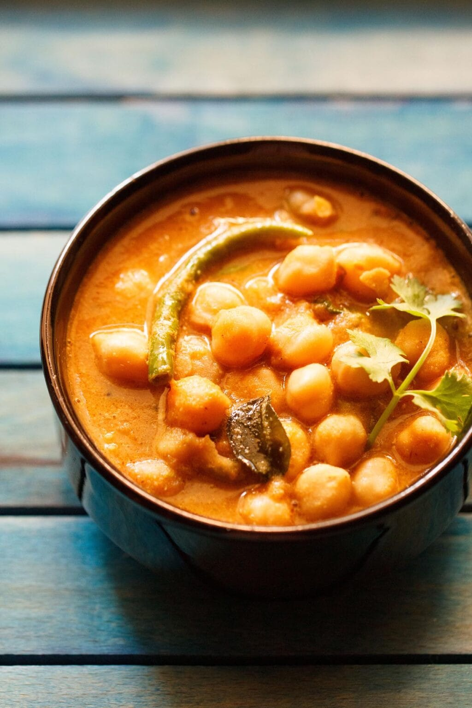

⏱️Prep Time: 9 hours
⏰Cook Time: 30 minutes
🍽️Servings: 4
🌱Diet: Vegetarian
🟡 Difficulty: Medium
Chickpea Curry Recipe is a South Indian style curry made with cooked chickpeas simmered in a fragrant coconut and roasted spice masala. In this Coconut Chickpea Curry, whole spices and coconut are roasted and ground into a paste, which forms the rich base of the curry. This vegan curry has a mildly spicy, aromatic flavor and pairs well with steamed rice, roti or other Indian breads.
In my recipe collection, I make several kinds of chickpea curries at home. One of the most popular is the Punjabi-style traditional recipe of Chole Masala, which is prepared with a tangy onion-tomato masala and warming spices.
The Chickpea Curry shared here is quite different. This is a South Indian style Coconut Chickpea Curry where the main flavor comes from roasted spices and coconut ground into a masala paste.

To make this curry, whole spices and dried red chilies are first roasted along with grated coconut until fragrant and golden.
This mixture is then ground into a smooth paste which forms the base of the curry. The cooked chickpeas are simmered in this aromatic coconut masala with onions, tomatoes and spices until the gravy thickens slightly.
The spice level of this curry can be adjusted easily. For a milder version, use about 2 dried red chilies while preparing the coconut masala. If you prefer a spicier curry, increase it to 3 or 4 dried red chilies depending on your taste.
This curry has a very different flavor from the usual North Indian chickpea curries. The roasted coconut gives it a rich aroma and a mild sweetness that balances the spices.
I usually prefer using dried chickpeas for most chickpea recipes. Soak them overnight and cook them until soft before using.
However, this chickpea curry recipe also works well with canned chickpeas. The coconut and spice base is quite flavorful, so once the masala is prepared you can simply add drained and rinsed canned chickpeas and simmer the curry for a few minutes.
To make this recipe with canned chickpeas, use about 3 cups of drained and rinsed chickpeas.
1. First, rinse 1 cup dried white chickpeas for a couple of times in
water. Then, soak the chickpeas in 3 cups water overnight or for 8 to 9
hours. Below is a photo of the soaked chickpeas.
Tip: If you have
forgotten to soak the chickpeas, soak them in hot water for 2 hours.
2. Drain the water. Rinse the chickpeas again a couple of times.
3. Again drain all of the water and add the soaked chickpeas in a 3
litre stovetop pressure cooker. Add ½ teaspoon salt.
If you do not
have a stovetop pressure cooker, cook chickpeas in a pot or pan covering
them with 3.5 to 4 cups of water. Or opt to cook them in the Instant Pot
adding 3 cups of water.
5. Add 3 cups water.
6. Stir to mix. Cover tightly with the pressure cooker’s lid. Pressure
cook the chickpeas for about 20 to 22 minutes or 18 to 20 whistles on
medium to high heat. The chickpeas should be completely cooked and have
a melt-in-mouth consistency.
Note: If cooking chickpeas in a pot,
add about 3.5 to 4 cups water with salt to the chickpeas. Cover and cook
the chickpeas till softened.
7. While the chickpeas are cooking, prepare the curry base. Gather the spices listed below:
❱❱ ½ tablespoon fennel seeds
❱❱ ½ tablespoon cumin seeds
❱❱ 1 tablespoon coriander seeds
❱❱4 to 5 black peppercorns
❱❱ 2 green cardamoms
❱❱ 2 to 3 cloves
❱❱ 1 black cardamom
❱❱ 1 inch cinnamon
❱❱ 2 dried red chilies (mild to medium hot), seeds removed
❱❱ 1 small piece stone flower (dagad phool), optional
For a spicy taste, add about 3 to 4 dried red chilies. The amount of red
chilies to be added depends on the heat quotient in the chilies.
So, if you use red chilies which have a high heat quotient, then
just 1 or 2 dried red chilies would be fine.
8. You need to toast or roast the spices first. In a frying pan or skillet, dry roast all the spices stirring often on low heat till they become fragrant – taking care that you do not burn them.
9. Next, add ½ cup tightly packed grated fresh coconut and continue to
roast.
Do not worry if you do not have fresh coconut. Instead add about ⅓
cup of unsweetened desiccated or shredded coconut.
10. Stir continuously while roasting the coconut, so that there is uniform browning.
11. Roast till the coconut becomes golden. Remove the pan from heat and allow this mixture to cool.
12. Once the coconut-spice mixture is cooled, add it to a high-speed
blender or a mixer-grinder jar.
Also remember to remove the husk
from the black cardamom and just add its seeds in the blender or
grinder.
13. Add about ⅔ to ¾ cup water and grind to a fine and smooth paste. Ensure that the curry paste is not gritty or has fine chunks of the spices or coconut. Set aside.
14. Heat 3 tablespoons oil in a pan. Keeping heat to a low, add ½ teaspoon mustard seeds and allow them to crackle.
16. Then, add 1 tej patta (Indian bay leaf) and stir.
17. Add ⅓ cup finely chopped onions.
18. Stir and sauté till the onions turn translucent and soften on low to medium heat.
19. Add the below listed ingredients:
20. Stir and sauté on low heat for a few seconds or until the raw aroma of ginger-garlic goes away.
21. Add ½ cup chopped tomatoes.
22. Sauté on low to medium heat for about 2 to 3 minutes or till the tomatoes soften.
23. Add the prepared curry paste.
24. Stir very well to combine with the rest of the sautéed ingredients.
25. Then, add the drained and cooked chickpeas.
26. Stir well again and sauté for a minute.
27. Now, add 1 cup water and 1 or 2 slit green chilies.
28. Season with salt as required. Mix again.
29. First bring to a boil on medium heat and later simmer the curry on
low to medium heat for 10 to 15 minutes; or till the curry thickens a
bit and you see some oil floating on top.
Mash a few chickpeas
with the back of the spoon to thicken the chickpea curry. Check the
seasonings and add more salt as per your taste. Add more water, if
needed depending on the consistency you prefer.
30. Lastly, switch off the heat and add 2 tablespoons chopped coriander leaves (cilantro). Stir well.
31. Serve Chickpea Curry hot with Indian breads like poori, Naan, tandoori roti, Bhatura, Aloo paratha, bread, jeera rice or steamed rice accompanied with lemon wedges and onion slices.